OCI Data Science 주요 기능 테스트
1. 파이프라인에서 컨테이너 실행하기
Data Science 파이프라인의 각 step에서 컨테이너 이미지가 정상적으로 실행되는지 확인해 봅니다. 이를 위해 컨테이너 이미지 생성, OCIR에 푸시부터 파이프라인에서 실행하는 것까지 테스트해봅니다.
컨테이너 이미지 준비
-
컨테이너에서 실행할 코드 준비 -
simplest.pyimport datetime import os import time pipe_id = os.environ.get("PIPELINE_RUN_OCID", "LOCAL") print(f"Starting pipeline run: {pipe_id}") print(f"Current timestamp in UTC: {datetime.datetime.now(datetime.timezone.utc)}") print("Waiting for 5 seconds.") time.sleep(5) print("Environment variables:") for item, value in os.environ.items(): print(f"\t {item}: {value}") -
Dockerfile 작성
FROM python:3.12-slim AS base ENV DATASCIENCE_USER=datascience ENV DATASCIENCE_UID=1000 ENV HOME=/home/$DATASCIENCE_USER ENV PYTHONUNBUFFERED=1 RUN python -m pip install \ oci \ ocifs COPY simplest.py . CMD ["python", "simplest.py"] -
컨테이너 이미지 빌드
docker buildx build \ --platform linux/amd64,linux/arm64 \ -t byoc:1.0.0 \ . -
로컬 실행 테스트
$ docker run byoc:1.0.0 Starting pipeline run: LOCAL Current timestamp in UTC: 2026-11-12 03:47:41.994358+00:00 Waiting for 5 seconds. Environment variables: PATH: /usr/local/bin:/usr/local/sbin:/usr/local/bin:/usr/sbin:/usr/bin:/sbin:/bin HOSTNAME: 69aac9733f28 LANG: C.UTF-8 GPG_KEY: 7169605F62C751356D054A26A821E680E5FA6305 PYTHON_VERSION: 3.12.16 PYTHON_SHA256: b5796915dc45ff745cfb4e990a7e7c93d6f546328a102ce31448d69ebc37575c DATASCIENCE_USER: datascience DATASCIENCE_UID: 1000 HOME: /home/datascience
OCIR에 이미지 푸시하기
Supported Configurations에 ML Pipelines only support container images residing in the OCI Registry.라고 설명하고 있습니다. 파이프라인에서 사용할 컨테이너 이미지를 OCIR에 먼저 푸시합니다.
-
테넌트 네임스페이스 확인
- https://cloud.oracle.com/tenancy 에 접속하여, Object storage namespace 확인
-
Docker Login시 사용할 Auth Token 생성
-
OCIR에 로그인
docker login -u '<tenant_namespace>/<username>' <region>.ocir.io-
예,
docker login -u 'axcfcoiuv3eq/kildong.hong@example.com' ap-seoul-1.ocir.io
-
-
OCIR를 위해 Tag 하기
docker tag <local_image_name>:<local_version> <region>.ocir.io/<tenancy_namespace>/<repo>:<version>-
예
docker tag byoc:1.0.0 ap-seoul-1.ocir.io/axcfcoiuv3eq/data-science/byoc:1.0.0
-
-
OCIR Repository 생성하기
- https://cloud.oracle.com/compute/registry/containers
- Repository name:
data-science/byoc
-
이미지 푸시
docker push <region>.ocir.io/<tenancy_namespace>/<repo>:<version>-
예,
docker push ap-seoul-1.ocir.io/axcfcoiuv3eq/data-science/byoc:1.0.0
-
파이프라인 만들기
-
파이프라인을 생성
- Name: 예,
byoc-test-pipeline
- Name: 예,
-
Add pipeline steps 선택
-
From container 선택
-
Step name: 예,
step-1. -
Container configuration에서 Configure 선택
-
Configure your container environment 설정 화면
- 사용할 컨테이너 이미지가 있는 Compartment 선택
- 사용할 이미지 선택
- 다른 항목은 그대로 두고 Configure 선택
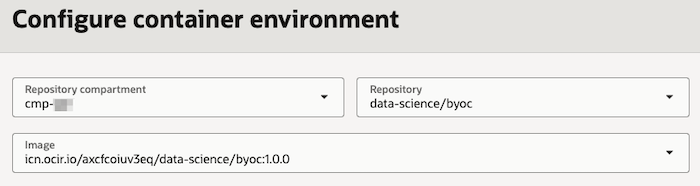
-
선택결과
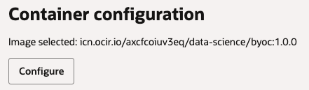
-
나머지 항목은 그대로 Save 선택하여 Step 설정 완료함
-
Logging configuration에서 Enable logging 선택후 Log group 설정하여 Pipeline 로그 설정
-
Create pipeline을 클릭하여 파이프라인 생성완료
파이프라인 권한 설정
-
Data Science를 위한 기본적인 Policy 설정되어 있는 상황에서, 파이프라인 실행시 컨테이너 이미지를 가져올 수 있게 IAM Policy로 권한을 추가합니다.
allow any-user to read repos in compartment Sandbox where ALL { request.principal.type = 'datasciencepipelinerun' }
파이프라인 실행
-
Pipeline runs 탭으로 이동하여, 파이프라인을 실행
-
파이프라인 실행완료후 로그를 확인하면, 컨테이너가 실행되어 코드내 print 내용이 출력된 것을 볼 수 있습니다.
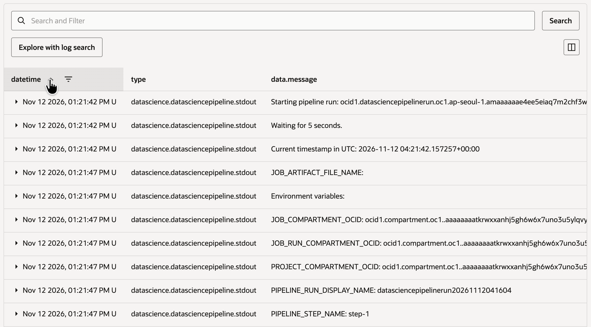
2. 파이프라인에서 컨테이너 실행하기 - 실행 코드만 변경하기
앞서 작성한 컨테이너 이미지를 재사용하여, 실행 코드만 교체하는 방법을 알아봅니다.
실행할 코드 준비
-
컨테이너에서 실행할 코드 준비 -
simplest-v2.pyimport datetime import os import time pipe_id = os.environ.get("PIPELINE_RUN_OCID", "LOCAL") print(f"Starting pipeline run: {pipe_id}") print(f"Current timestamp in UTC: {datetime.datetime.now(datetime.timezone.utc)}") print("simplest-v2.py") print("Waiting for 10 minutes.") for minute in range(1, 11): time.sleep(60) print(f"{minute} minute(s) elapsed.") print("Resuming execution.")
파이프라인 만들기 & 실행하기
-
파이프라인을 생성
- Name: 예,
byoc-test-pipeline-v2
- Name: 예,
-
Add pipeline steps 선택
-
From container 선택
-
Step name: 예,
step-1. -
Container configuration에서 Configure 선택
-
Configure your container environment 설정 화면
-
사용할 컨테이너 이미지는 동일하게 선택
-
CMD만 새로 업로드할 파일을 실행할 수 있도록 설정
- 이후 설정에서 단일 파일을 업로드하면
/home/datascience/하위에, 압축 파일은/home/datascience/decompressed_artifact/하위에 압축해제 되므로 그에 따라 실행 파일을 지정해 줍니다. - 여기서는
python,/home/datascience/simplest-v2.py입력
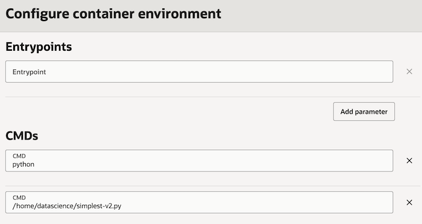
- 이후 설정에서 단일 파일을 업로드하면
-
-
Upload job artifact에서 실행할 코드
simplest-v2.py를 업로드 합니다.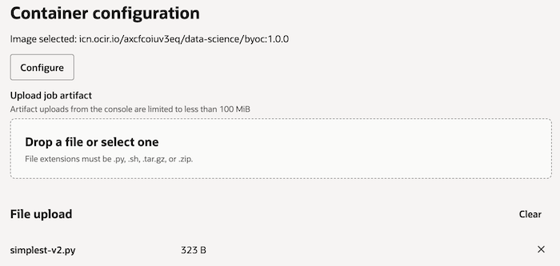
-
나머지는 이전과 동일하게 설정하여 파이프라인 생성을 완료 합니다.
-
파이프라인을 실행하고 로그를 확인합니다. 변경된 코드가 실행된 것을 볼 수 있습니다.
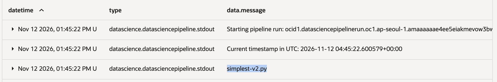
######3. maximum runtime 테스트**
파이프라인 설정에 Set the maximum runtime(in minutes) 라는 항목이 있습니다. 파이프라인이 비정상적으로 오래 실행될 때 이 값을 통해 파이프라인 실행을 중지하게 할 수 있는 지 확인해 봅니다.
| 파이프라인 수준의 실행 시간 제한은 10분마다 동작하는 별도의 모니터가 적용하고, 스텝 수준의 실행 시간 제한은 1시간마다 동작하는 모니터가 적용한다고 합니다.
-
byoc-test-pipeline-v2파이프라인을 편집합니다. Maximum runtime을 5분으로 변경하고 저장합니다.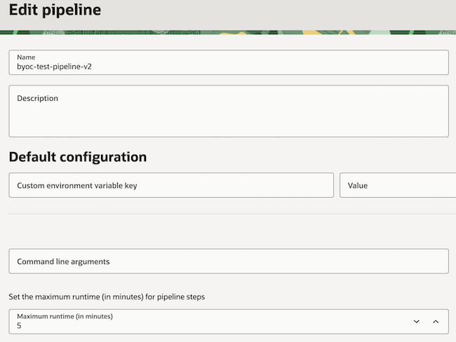
-
이제 파이프라인을 실행합니다. 실행코드는 현재 5분 이상 실행되어, 실행시 타임아웃이 발생하게 됩니다.
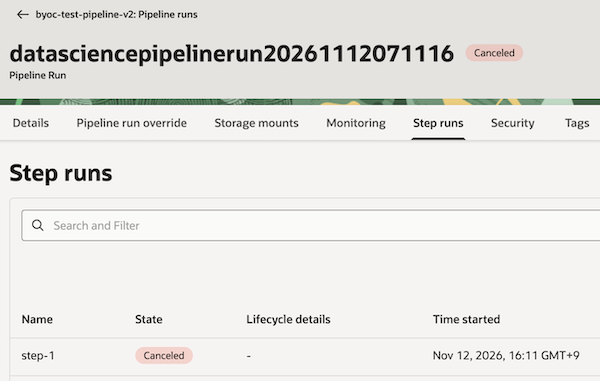
-
step과 파이프라인 모두 Canceled 상태로 표시됩니다.
-
코드 로그 상으로도 일정 시간 까지만 로그가 찍힌 것을 볼수 있습니다.
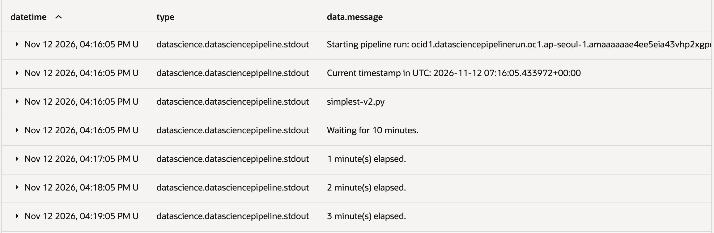
4. Pipeline에서 Step간 파라미터 전달하기
이전 스텝의 결과에 따라 다음 스텝의 진행 흐름을 바꾼다거나, 이전 스텝에서 설정한 값이 필요한 경우에 Step Output Parameters와 Step 환경 변수값을 통해 전달할 수 있습니다. 의존성이 있는 Step간에 값을 전달하는 방법을 알아봅니다.
이를 통해 이전 Step의 결과값에 따라 이후 Step에서 처리 흐름을 달리할 수 있습니다.
실행할 스크립트 코드 준비
-
step-1 에서 사용할 코드
simplest-step-1.py를 작성합니다. 다음 스텝으로 결과를 넘길 항목을 여기서는 JSON 형식으로 파일을 만듭니다.import datetime import os import time import json from pathlib import Path import oci pipe_id = os.environ.get("PIPELINE_RUN_OCID", "LOCAL") step_name = os.environ.get("PIPELINE_STEP_NAME", "UNKNOWN") print(f"[{step_name}] Starting pipeline run: {pipe_id}") print(f"[{step_name}] Current timestamp in UTC: {datetime.datetime.now(datetime.timezone.utc)}") print(f"[{step_name}] simplest-step-1.py") mock_step_result = os.environ.get("MOCK_STEP_RESULT", "SUCCEEDED") # 다음 STEP에 현재 STEP의 값을 전달하는 방법 data = { "pipeline_step_name": step_name, "result": mock_step_result } output_path = Path("/home/datascience/output.json") if pipe_id == "LOCAL": output_path = Path.cwd() / "output.json" with output_path.open("w", encoding="utf-8") as f: json.dump(data, f, ensure_ascii=False, indent=2) # STEP 실행 코드내에서 다음 STEP 진행하지 않고, 파이프라인 종료하는 경우 cancel_pipeline_on_failure = os.environ.get("CANCEL_PIPELINE_ON_FAILURE", "FALSE") if pipe_id != "LOCAL": if mock_step_result == "FAILED" and cancel_pipeline_on_failure == "TRUE": signer = oci.auth.signers.get_resource_principals_signer() data_science_client = oci.data_science.DataScienceClient(config={}, signer=signer) cancel_pipeline_run_response = data_science_client.cancel_pipeline_run( pipeline_run_id=pipe_id, terminate_gracefully=True) print(f"[{step_name}] {cancel_pipeline_run_response.headers}") -
step-2 에서 사용할 코드
simplest-step-2.py를 작성합니다. 환경변수PRE_STEP_NAME,PRE_STEP_RESULT을 사용하여 이전 스텝의 output을 가져오는 것으로 작성하였습니다. (매핑은 이후 파이프라인 생성시 하게됩니다.) 그리고PRE_STEP_RESULT의 값에 따라 추가 로직의 수행 여부를 결정하였습니다.- 실제 step 실패나 서비스 차원의 스킵이 아니라, 이전 step에서 전달받은 값에 따른 처리가 생략되는지를 확인하는 테스트입니다.
import datetime import os import time import sys pipe_id = os.environ.get("PIPELINE_RUN_OCID", "LOCAL") step_name = os.environ.get("PIPELINE_STEP_NAME", "UNKNOWN") print(f"[{step_name}] Starting pipeline run: {pipe_id}") print(f"[{step_name}] Current timestamp in UTC: {datetime.datetime.now(datetime.timezone.utc)}") print(f"[{step_name}] simplest-step-2.py") # 이전 STEP의 값을 전달받아 사용하는 경우, 여기서는 현재 STEP의 로직 수행 여부 판단하는 예시 pre_step_name = os.environ.get("PRE_STEP_NAME", "UNKNOWN") pre_step_result = os.environ.get("PRE_STEP_RESULT", "UNKNOWN") print(f"[{step_name}] PRE_STEP_NAME: {pre_step_name}") print(f"[{step_name}] PRE_STEP_RESULT: {pre_step_result}") if pre_step_result != "SUCCEEDED": print(f"[{step_name}] SKIPPED: Previous step was not SUCCEEDED.") sys.exit(0) # 콘솔에는 SUCCEEDED로 표시 print(f"[{step_name}] Execute something...") time.sleep(5)
파이프라인 만들기
-
파이프라인을 생성
- Name: 예,
test-pipeline-v1
- Name: 예,
-
Add pipeline steps 선택
-
Step 1 추가
-
From script 선택
-
Step name: 예,
step-1 -
Upload job artifact에서 작성한
simplest-step-1.py을 업로드 -
Output parameters 설정
-
코드에서 쓴 파일을 출력 파라미터로 매핑합니다.
data = { "pipeline_step_name": step_name, "result": mock_step_result } -
Output parameter type:
JSON -
Parameter Name:
pipeline_step_name -
Parameter Name:
result -
Output file name:
/home/datascience/output.json
-
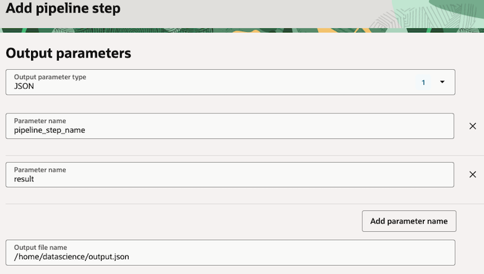
-
-
Step 2 추가
-
From script 선택
-
Step name: 예,
step-2 -
Depends on: 선후 관계를 나타내기 위해
step-1선택 -
Upload job artifact에서 작성한
simplest-step-2.py을 업로드 -
Custom environment variable key 설정
-
이전 stepName의 output parameter를 아래 형식으로 사용할 수 있습니다.
{{stepParameters.<stepName>.output.<paramName>}} -
PRE_STEP_NAME:{{stepParameters.step-1.output.pipeline_step_name}} -
PRE_STEP_RESULT:{{stepParameters.step-1.output.result}}
-
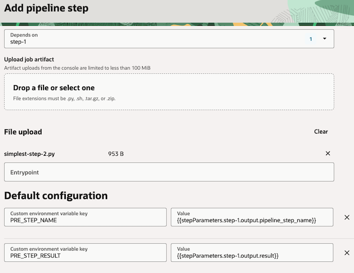
-
-
나머지는 이전과 동일하게 설정하여 파이프라인 생성을 완료 합니다.
-
이제 파이프라인을 실행합니다. Pipeline configuration override 로
MOCK_STEP_RESULT=FAILED로 추가 설정하여 실행합니다.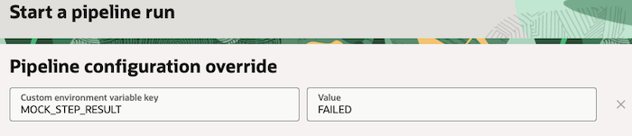
-
step-2 에서 step-1의 Output parameters를 잘 가져오는 것을 알 수 있습니다.
PRE_STEP_RESULT값에 따라 처리된 것을 볼 수 있습니다.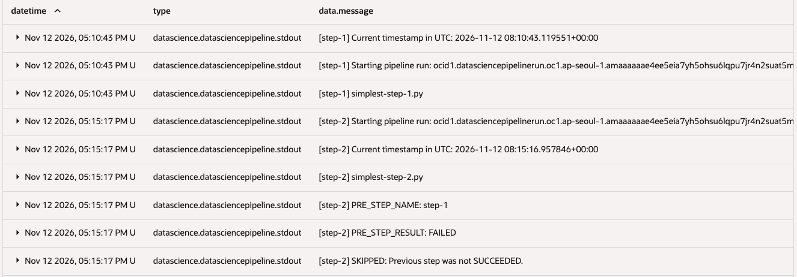
5. Pipeline 실행 중 취소하기
Canceling a Pipeline Run Gracefully을 지원하여, 콘솔, CLI, API 등으로 실행중인 파이프라인은 취소할 수 있습니다. 파이프라인 내부의 사용자 코드가 더 이상 실행할 필요가 없다고 판단하는 경우, terminateGracefully 옵션으로 실행을 중단하고 파이프라인은 성공 상태로 기록할 수 있습니다. 이를 통해 모니터링 시 사용자의 의도적인 종료와 자원 부족 등으로 서비스가 취소한 실행을 구분할 수 있습니다.
조건부로 파이프라인 취소 여부를 판단하기 위해 본 테스트에서는 편의상 환경 변수를 사용하였습니다.
파이프라인 권한 설정
-
Data Science를 위한 기본적인 Policy 설정되어 있는 상황에서, 파이프라인 코드내에서 파이프라인 cancel_pipeline_run API를 실행할 수 있게 IAM Policy로 권한을 추가합니다.
allow any-user to manage data-science-pipeline-runs in compartment Sandbox where ALL { request.principal.type = 'datasciencepipelinerun' }
파이프라인 설명 및 테스트
-
step-1 에서 사용할 코드
simplest-step-1.py후반 코드와 같이 OCI APIdata_science_client.cancel_pipeline_run()를 실행하여, 현재 파이프라인을 취소할 수 있습니다.... # STEP 실행 코드내에서 다음 STEP 진행하지 않고, 파이프라인 종료하는 경우 cancel_pipeline_on_failure = os.environ.get("CANCEL_PIPELINE_ON_FAILURE", "FALSE") if pipe_id != "LOCAL": if mock_step_result == "FAILED" and cancel_pipeline_on_failure == "TRUE": signer = oci.auth.signers.get_resource_principals_signer() data_science_client = oci.data_science.DataScienceClient(config={}, signer=signer) cancel_pipeline_run_response = data_science_client.cancel_pipeline_run( pipeline_run_id=pipe_id, terminate_gracefully=True) print(f"[{step_name}] {cancel_pipeline_run_response.headers}") -
이제 파이프라인을 실행합니다. 이번에는 step-1에서 결과에 따라 자체적으로 이후 step 처리없이 파이프라인을 API로 종료하도록 Pipeline configuration override 로
MOCK_STEP_RESULT=FAILED및CANCEL_PIPELINE_ON_FAILURE=TRUE을 추가 설정하여 실행합니다.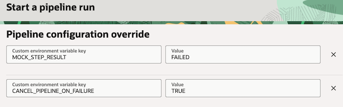
-
step-1은 후속 스텝 실행 없이 종료되었고, step-2는 스킵된 것을 볼 수 있습니다.
- step-1은 실행에 따라 Succeeded 또는 Canceled, 파이프라인은 Succeeded 상태로 관찰되었습니다.
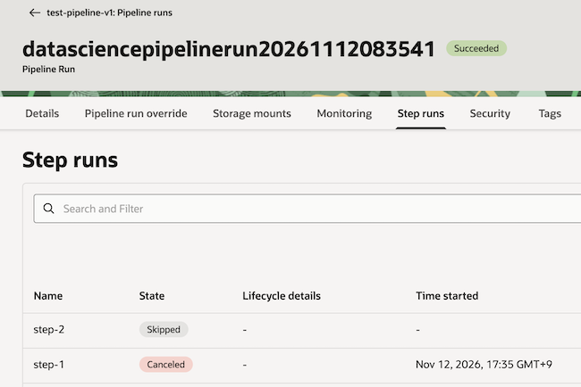
-
파이프라인은 Succeeded 상태로 표시됩니다.
-
실행로그에서도 step-1 실행 과정에서
CANCEL_PIPELINE_ON_FAILURE=TRUE값에 따라 OCI APIdata_science_client.cancel_pipeline_run()호출에 대한 응답 헤더가 마지막에 출력되었습니다.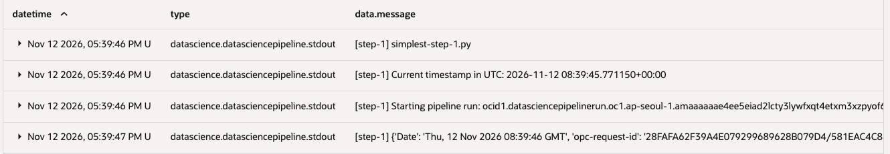
이 글은 개인으로서, 개인의 시간을 할애하여 작성된 글입니다. 글의 내용에 오류가 있을 수 있으며, 글 속의 의견은 개인적인 의견입니다.